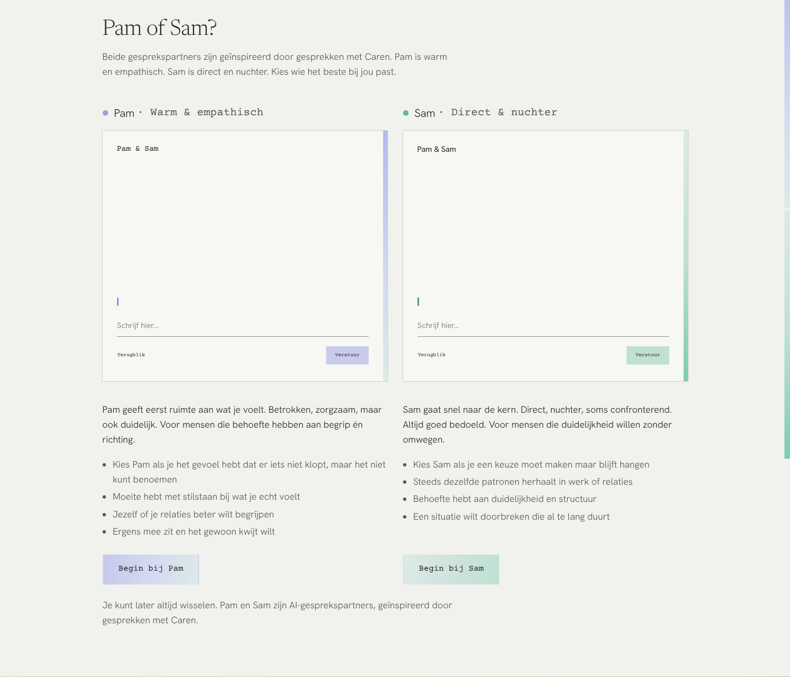
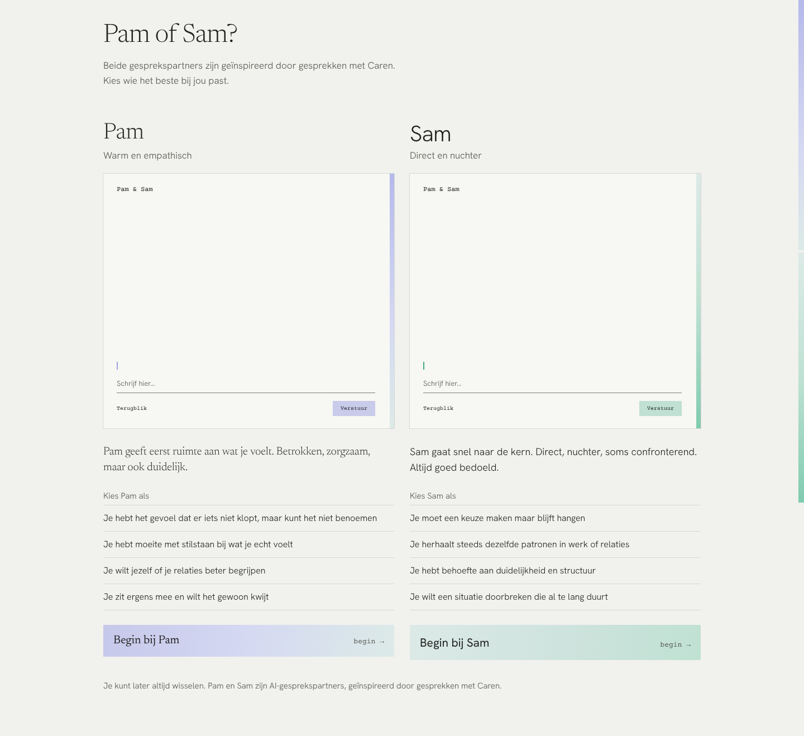
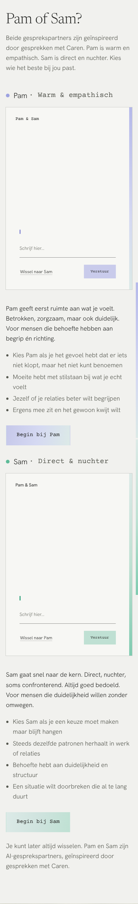
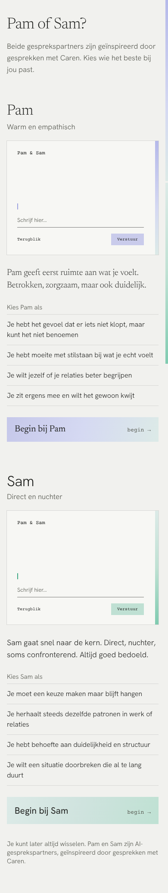

De kleine kamers blijven. Wat verandert: de naam wordt een kopje in de eigen letter, de lijst staat zonder bolletjes tussen dunne lijnen, en eronder staat de regel in het verloop, zoals in de kop.


Weg: de stip met "Pam · Warm & empathisch" in typemachineletter, de opsommingstekens en de losse knop. Ook het logo in de kleine kamer is nu bij Pam en Sam hetzelfde; dat verschilde.

